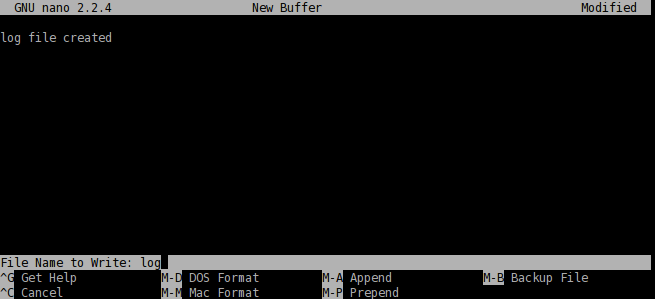

You can create a folder by issuing
mkdir name_of_a_new_folder
For example, let's say we are going to create a photo folder.
mkdir photo
will place the new folder in the current directory. You can check this by typing
ls
Next, let's create a log file for the photo folder. nano
is a command-line application for reading and writing texts. To bring
up the program, type in
nano

The application is simple to use, and you can see command options shown at the bottom. Type
log file created
and with Ctrl+x, save the document as log
and quit the application.